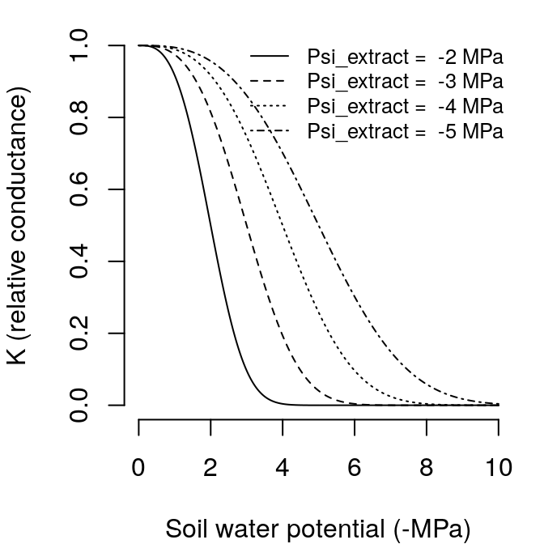

Chapter 9 Radiation balance
The following subsection detail the calculation of radiation components of the energy balance equations.
9.1 Shortwave radiation absorbed by the canopy
The canopy is divided into vertical layers (whose size is determined by the control parameter ), and the expanded and dead leaf area index of each cohort within each layer is determined. Let \(n\) be the number of canopy layers. And let \(LAI_{i,j}^{all} = LAI_{i,j}^{\phi}+LAI_{i,j}^{dead}\) be the leaf area index of cohort \(i\) in layer \(j\). Furthermore, it is generally accepted that sunlit and shade leaves need to be treated separately (De Pury and Farquhar 1997). This separation is necessary because photosynthesis of shade leaves has an essentially linear response to irradiance, while photosynthesis of leaves in sunflecks is often light saturated and independent of irradiance.
The average irradiance reaching the top of each canopy layer \(j\) is calculated separately for direct beam and diffuse radiation: \[\begin{eqnarray} I_{beam,j} &=& (1 - \gamma) \cdot I_{beam} \cdot \exp\left[ \sum_{h=j+1}^{n}{\sum_{i}^{c}{-k_{b,i}\cdot \alpha_i^{0.5}\cdot LAI^{all}_{i,h}}}\right]\\ I_{dif,j} &=& (1 - \gamma) \cdot I_{dif} \cdot \exp\left[ \sum_{h=j+1}^{n}{\sum_{i}^{c}{-k_{d,i}\cdot \alpha_i^{0.5}\cdot LAI^{all}_{i,h}}}\right] \end{eqnarray}\] where \(I_{beam}\) and \(I_{dif}\) are the direct and diffuse irrradiance at the top of the canopy, \(\gamma\) is the leaf reflectance (\(\gamma_{PAR} = 0.04\), \(\gamma_{SWR} = 0.05\)), \(k_{b,i}\) is the extinction coefficient of cohort \(i\) for direct light (\(k_{b,i} = 0.8\)), \(k_{d,i}\) is the extinction coefficient of cohort \(i\) for diffuse light (i.e. \(k_{PAR}\) or \(k_{SWR}\)) and \(\alpha_i\) is the absorbance coefficient (\(\alpha_{i,PAR} = 0.9\), \(\alpha_{i,SWR} = 0.7\)).
The proportion of sunlit leaves, i.e. leaves in a canopy layer that the direct light beams (sunflecks) reach is: \[\begin{equation} f_{SL, j} = \exp\left( \sum_{k>j}^{n}{\sum_{i}^{c}{-k_{b,i} \cdot LAI^{all}_{i,k}}}\right) \cdot \exp\left( \sum_{i}^{c}{-k_{b,i} \cdot 0.5\cdot LAI^{all}_{i,j}}\right) \end{equation}\] As an example we will consider a canopy of one species of LAI = 2, divided into ten layers with constant leaf density.
This canopy definition leads to a percentage of the above-canopy irradiance reaching each layer (Anten and Bastiaans 2016). Extinction of direct radiation also defines the proportion of leaves of each layer that are affected by sunflecks (i.e. the proportion of sunlit leaves).

The amount of absorved diffuse radiation per leaf area unit of cohort \(i\) within a given canopy layer \(j\) is calculated as: \[\begin{equation} I_{dif,i,j} = I_{dif,j} \cdot k_{d,i} \cdot \alpha_i^{0.5} \exp\left[ \sum_{h}^{c}{-k_{d,h}\cdot \alpha_h^{0.5}\cdot 0.5\cdot LAI^{all}_{h,j}}\right] \end{equation}\]
The amount of absorved scattered beam radiation per leaf area unit of cohort \(i\) within a given canopy layer \(j\) is calculated as: \[\begin{equation} % \begin{split} I_{sca,i,j} = I_{b,j} \cdot k_{b,i} \left( \alpha_i^{0.5}\cdot \exp \left( \sum_{h}^{c}{-k_{b,h}\cdot \alpha_h\cdot 0.5\cdot LAI^{all}_{h,i}}\right) -\frac{\alpha_i}{(1-\gamma)}\cdot \exp\left( \sum_{h}^{c}{-k_{b,h}\cdot 0.5\cdot LAI^{all}_{h,i}}\right) \right) % \end{split} \end{equation}\]
Finally, the direct radiation absorbed by a unit of sunlit leaf area of cohort \(i\) in a canopy layer \(j\) does not depend on the position of the canopy layer and is: \[\begin{equation} I_{dir,i,j} = I_{beam} \cdot \alpha_i \cdot 0.5/\sin{\beta} \end{equation}\] where \(\beta\) is the solar elevation angle, which changes throughout the day. The amount of light absorbed by shaded/sunlit foliage of cohort \(i\) in layer \(j\) per leaf area unit (\(I_{SH,i,j}\) and \(I_{SL,i,j}\), respectively) is: \[\begin{eqnarray} I_{SH,i,j} &=& I_{dif,i,j} + I_{sca,i,j} \\ I_{SL,i,j} &=& I_{dif,i,j} + I_{sca,i,j} + I_{dir,i,j} \end{eqnarray}\] The total amount of light absorbed by shaded/sunlit foliage of cohort \(i\) per ground area unit is found by taking into account the proportion of sunlit foliage: \[\begin{eqnarray} \Phi_{SH,i,j} &=& I_{SH,i,j}\cdot (1 - f_{SL,j}) \cdot LAI^{\phi}_{i,j}\\ \Phi_{SL,i,j} &=& I_{SL,i,j}\cdot f_{SL,j} \cdot LAI^{\phi}_{i,j} \end{eqnarray}\]
9.2 Shortwave radiation absorbed by the soil
The instantaneous shortwave radiation reaching the soil is calculated separately for direct beam and diffuse radiation: \[\begin{eqnarray} K_{beam, soil} &=& K_{beam} \cdot \exp\left[ \sum_{h=j+1}^{n}{\sum_{i}^{c}{-k_{b,i}\cdot \alpha_i^{0.5} \cdot LAI^{all}_{i,h}}}\right]\\ K_{dif, soil} &=& K_{dif} \cdot \exp\left[ \sum_{h=j+1}^{n}{\sum_{i}^{c}{-k_{d,i}\cdot LAI^{all}_{i,h}}}\right] \end{eqnarray}\] where \(K_{beam}\) and \(K_{dif}\) are the direct and diffuse irrradiance at the top of the canopy, \(k_{b,i}\) is the extinction coefficient of cohort \(i\) for direct light (\(k_{b,i} = 0.8\)) and \(k_{d,i}\) is the extinction coefficient of cohort \(i\) for diffuse SWR. From these, the SWR absorbed by the soil is found by: \[\begin{equation} K_{abs,sa} = (1 - \gamma_{SWR, soil})\cdot (K_{beam, soil} + K_{dif, soil}) \end{equation}\] where \(\gamma_{SWR, soil} = 0.10\) is the SWR reflectance (10% albedo) of the soil. LWR is treated in the same way as diffuse SWR. The instantaneous LWR reaching the soil is: \[\begin{equation} L_{abs,sa} = (1 - \gamma_{LWR, soil})\cdot L_{a} \cdot \exp\left[ \sum_{h=j+1}^{n}{\sum_{i}^{c}{-k_{LWR}\cdot LAI^{all}_{i,h}}}\right] \end{equation}\] where \(L_a\) is the atmosphere longwave irradiance, \(k_{LWR} = 0.8\) is the extinction coefficient for LWR and \(\gamma_{LWR, soil} = 0.05\) is LWR soil reflectance (5% albedo) of the soil.
9.3 Longwave soil-canopy radiation exchange
Longwave radiation (LWR) emmited by a surface at the canopy temperature \(T_{can}\) would be: \[\begin{equation} L_{em} = 0.95 \cdot \sigma \cdot (T_{can} + 273.16)^{4.0} \end{equation}\] where \(0.95\) is emissivity and \(\sigma = 5.67 \cdot 10^{-8.0} Wm^{-2}\) is the Stephan-Boltzmann constant. However, the canopy may only partially cover the soil surface, so the value must be reduced by the proportion of the canopy layer actually exchanging energy. We take this as the proportion between atmospheric and absorbed LWR: \[\begin{eqnarray} p_{exch} &=& \frac{L_{abs,ca}}{L_a} \\ L_{em, c} &=& p_{exch} \cdot L_{em} \end{eqnarray}\] \(L_{em, c}\) is discounted twice from the canopy energy balance: as losses to the atmosphere and losses to the soil.
LWR emmited by the soil is calculated from the temperature of the first soil layer: \[\begin{equation} L_{em, s} = 0.95 \cdot \sigma \cdot (T_{soil} + 273.16)^{4.0} \end{equation}\]
Again, the canopy only absorbs part of this radiation, the remaining going to the atmosphere:
\[\begin{equation} L_{abs, cs} = p_{exch} \cdot L_{em,s} \end{equation}\]Bibliography
Anten, Niels P R, and Lammert Bastiaans. 2016. “The use of canopy models to analyze light competition among plants.” In Canopy Photosynthesis: From Basics to Application, edited by K. Hikosaka, Ülo Niinemets, and Niels P R Anten, 379–98. Springer.
De Pury, D G G, and Graham D Farquhar. 1997. “Simple scaling of photosynthesis from leaves to canopies without the errors of big-leaf models.” Plant, Cell and Environment 20 (5):537–57. https://doi.org/10.1111/j.1365-3040.1997.tb00466.x.